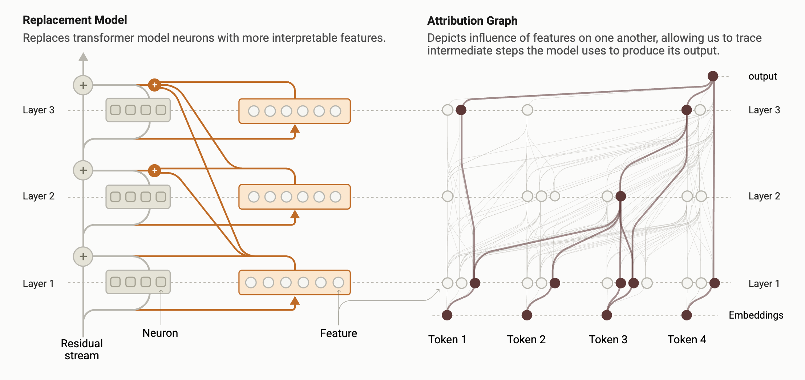

Circuit Tracing: How We Draw the Wiring Diagram of an AI's Thoughts

In a companion post we toured the biology of a language model — watching Claude plan rhymes, chain facts, and even scheme. But every one of those discoveries rests on a single technique. The goal sounds impossible: take a network of billions of inscrutable weights and turn the computation behind one specific answer into a readable diagram. The method that pulls this off is circuit tracing, and its output is an attribution graph.
Why you can't just read neurons
The obvious move would be to inspect the neurons. The trouble is that a single neuron fires for many unrelated things at once — faces, code, punctuation — all tangled together. That's polysemanticity, a consequence of superposition (the network packing more concepts than it has neurons). So the network's natural units are essentially unreadable. Before we can draw a circuit, we need cleaner parts.
Step 1 — swap neurons for features
Using dictionary learning, the model's activity is re-described with a large set of features, each tuned to a single, nameable concept. Where a neuron is a blur of meanings, a feature is one clean meaning. These are the interpretable building blocks.
Step 2 — a transparent replacement model
The key device is a cross-layer transcoder (CLT): a special dictionary that reads the model's residual stream and reproduces what its feed-forward layers would have computed — but expressed in those clean features, and features that can reach across layers. Swap it in for the original components and you get a replacement model: a stand-in that behaves almost like the real network but is built from interpretable pieces.
Step 3 — make it faithful for one prompt
A stand-in is only useful if it truly matches the original. So for each specific prompt, they build a local replacement model: freeze the attention patterns, and add correction terms so the stand-in reproduces the real model's activations exactly, on that prompt. This matters — it means the graph describes the actual computation the real model performed, not a loosely similar one.
Error nodes: honesty built in
Those correction terms have a name — error nodes — and they're the most honest touch in the method. Whatever the clean features genuinely cannot account for is dumped into an explicit error node, right there in the graph. So the diagram never pretends to understand more than it does. A big error node tells you that part of the computation is still outside our explanation. The unknown is labeled, not hidden.
Reading — and testing — the graph
The nodes are the active features (plus the input tokens, the output, and error nodes); the edges measure how strongly each feature directly pushes on the others. Raw, that graph has thousands of connections, so related features are grouped into supernodes and the graph is pruned down to what carries the computation. What's left reads almost like a sentence: this concept drove that one, which produced the answer.
But a beautiful diagram can still be wrong, so the method insists on validation. An attribution graph makes a prediction — turn off a feature it blames, and the output should change in a specific way. They perturb those features and check the real model responds as predicted. Only then does the graph become evidence, not just illustration.
How much does it explain?
Honestly: partially. The clean features capture a real, substantial fraction of the computation, and everything else is openly accounted for by error nodes. So you get a quantifiable claim of understanding — here's how much we can explain, and precisely how much we can't. The main limitation is that attention patterns are frozen, so this explains what information moves, but not why a head attends where it does (the subject of follow-up work).
That's circuit tracing: clean features → a transparent stand-in → a per-prompt graph → proof by perturbation. It's the quiet engine behind every striking result in the biology of large language models.
Source: Ameisen, Lindsey et al., "Circuit Tracing: Revealing Computational Graphs in Language Models," Anthropic — Transformer Circuits Thread (2025). All figures © the authors, shown here for educational explanation.
Cite this post
Auto-generated. Verify for your institution's requirements.